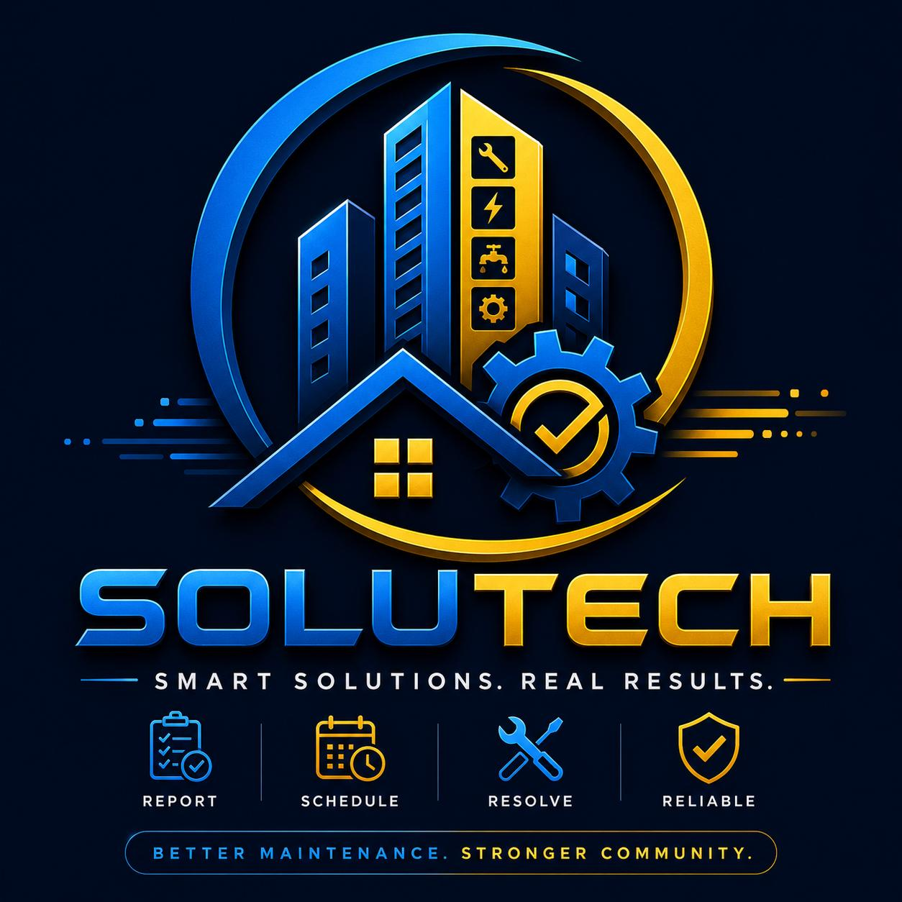

Smart Solutions. Real Results.
A Business Analysis project for Muma Properties
Maintenance reporting at Muma Properties is informal and unstructured. Issues flow through WhatsApp and verbal handoffs with no logging, ticketing, prioritization, or tracking. The result: delays, frustration, and incomplete repairs.
We are proposing a formalised, tracked reporting system that will:
Team formation, mentor meeting, project scope confirmation, project charter approval
✅ COMPLETEDOrganisational snapshot, SWOT/PESTLE analysis, As-Is process diagram, Gap/Issue log
🟡 IN PROGRESSStakeholder interviews, initial requirements, prioritisation
❌ NOT STARTEDSolution options, feasibility assessment, recommendation
❌ NOT STARTEDMicrosoft Form, stakeholder meeting, feedback collection, Mini-RFC
❌ NOT STARTEDFinal report, presentation, individual contribution statements
❌ NOT STARTEDThree measurable objectives guiding project planning, stakeholder engagement, and solution delivery.
Onboarding with mentor Kabelo Sithole (COO) to establish collaboration and professionalism.
Muma Properties must manage maintenance growth — maintaining visibility across students, maintenance team, and operations.
Applying Business Analysis and IT principles to a real organisational challenge.
The SoluTech Consulting team delivering this IT solution across all 12 weeks.
Team Lead & Business Analyst
ST10440503
Secretary & Process Modeller
ST10447445
Researcher & Documentation Lead
Project Coordinator
ST10437542
Business Analyst
ST10448360
Technical Analyst & Solution Designer
Business Systems Analyst
ST10456754
SoluTech Consulting is a student-led Business Analysis and IT consulting team from IIE Rosebank College, currently completing Work Integrated Learning (WIL) module XBIT7329.
We are partnered with Muma Properties to improve their maintenance reporting and resolution process — a real-world challenge affecting students, maintenance staff, and property management.
We document everything clearly and transparently.
We plan meticulously and deliver on time.
We solve problems with practical, tested solutions.
We are dependable and professional in all we do.
Mentor: Kabelo Sithole (COO, Muma Properties)
Email: kabelo@muma.co.za
Academic Supervisor: Nobuhle Moyo
Email: nomoyo@rbi.ac.za